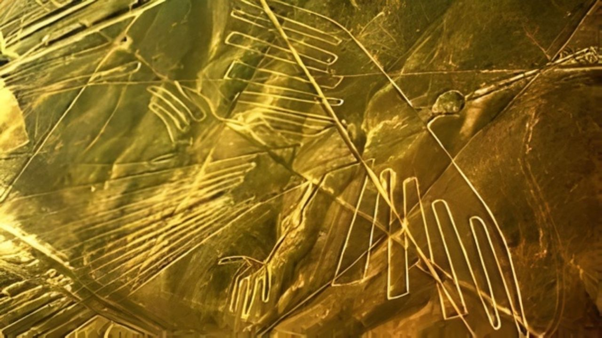
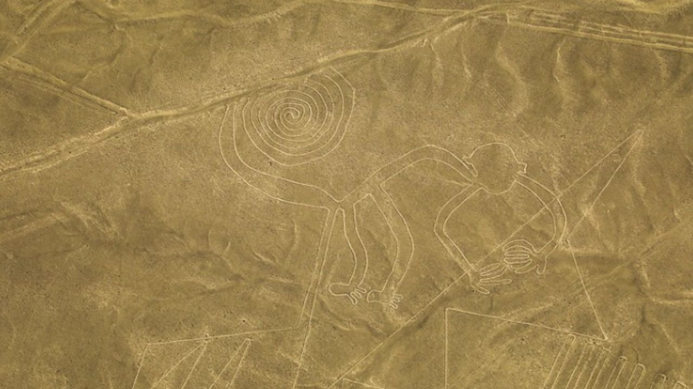
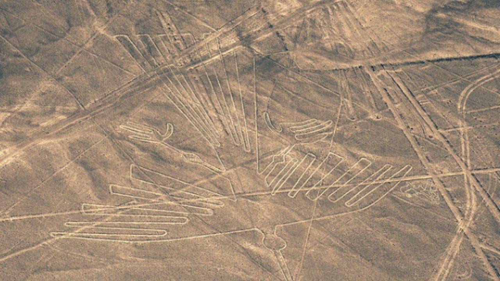

Líneas de Nazca



Varios arqueólogos, etnólogos, antropólogos y científicos han propuesto muchas teorías para explicar las líneas.
Las Líneas de Nazca están protegidas como Patrimonio de la Humanidad por la UNESCO.
Detalle
Las Líneas de Nazca están protegidas como Patrimonio de la Humanidad por la UNESCO. Nuestro programa guiado comienza una vez que tu guía te recoge en tu hotel. El sobrevuelo se realiza en avionetas Cessna de 5 pasajeros o Caravans de 12 pasajeros. Nuestro piloto habla inglés y explica cada figura misteriosa grabada en la tierra.
Incluye:
- Recojo de tu hotel en Nazca
- Traslado al aeropuerto de Nazca
- Asistencia de un guía local
- Video documental sobre las Líneas de Nazca
- Regreso a tu hotel al finalizar
- Guía de habla inglesa/hispana.
No Incluye:
- Extras y propinas.
- Impuestos de aeropuerto
- Alojamiento
Precio:
$120
Reservar Ahora